What I've built.
Two teams in CU Boulder's aerospace department were tasked with designing a clean sheet transonic commercial transport targeting a 50% fuel efficiency improvement over the Boeing 737 Max 8. I contributed to the Prototype Team. We designed and built a sub scale RC aircraft to validate Morphing Trailing Edge (MTE) technology as a viable high lift device. My responsibility was the complete tail system: design, stability analysis, and fabrication.
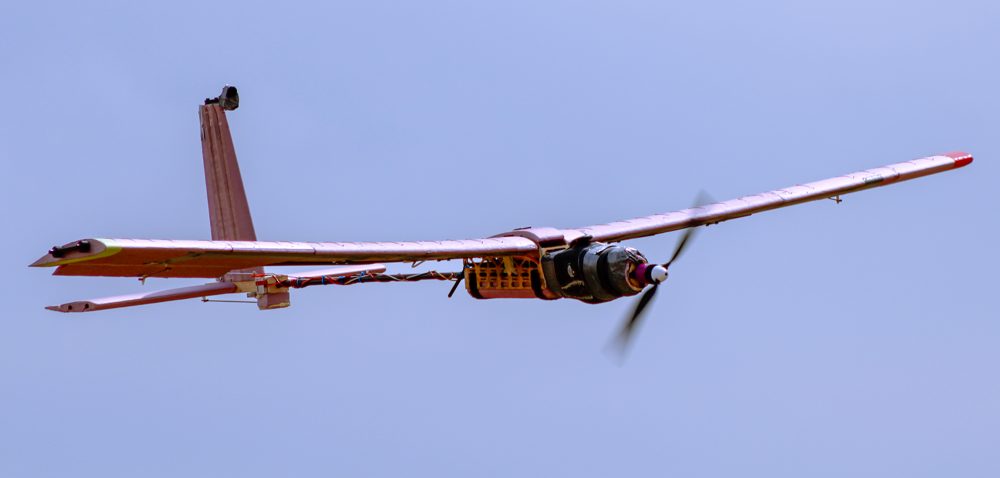
Prototype Demonstrator in flight
Tail Design
Independently designing the tail taught me that every geometric decision is a stability balancing act with cascading effects. I wanted the horizontal stabilizer large enough to provide sufficient pitch authority but oversizing it would add rear moment weight, shifting the CG aft and degrading static margin. The vertical stabilizer carried a similar tension, too small and directional stability suffers, pushing the aircraft's lateral directional behavior toward dutch roll, a failure mode I was specifically designing against. But sizing it larger to guard against that also shifts the CG aft, the same weight penalty as an oversized horizontal stabilizer.
Using volume coefficient methods I sized both surfaces against recommended ranges for light aircraft. The horizontal stabilizer landed at VH = 0.685, within the recommended range of 0.4–0.8 and toward the upper end, large enough for confident pitch authority without excessive rear weight penalty. The vertical stabilizer was more constrained. I wanted to target the higher end of the 0.02–0.05 recommended range to favor spiral instability over dutch roll, and a practical constraint of a camera mount at the tip worked in that favor, pushing the final value to VV = 0.0403. To counteract the rear moment weight penalty this introduced, I applied a taper ratio of 0.6, simultaneously reducing tip weight and induced drag.
The preference for spiral over dutch roll was deliberate. In a spiral, the aircraft descends in a tightening turn that a pilot can correct with basic input. Dutch roll produces an oscillating, out of phase yaw roll coupling that is significantly harder to correct, particularly for a non expert pilot flying a hand built prototype on its first flight. Given that test context, spiral was the safer failure mode to design toward.
For both surfaces I selected NACA 0012, for its symmetric camber, which produces zero pitching moment at zero angle of attack, and its well documented, predictable behavior at the low Reynolds numbers our sub scale aircraft would operate in.
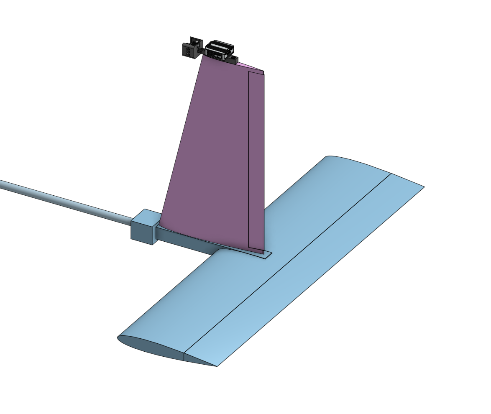
Tail Assembly — Onshape CAD Model
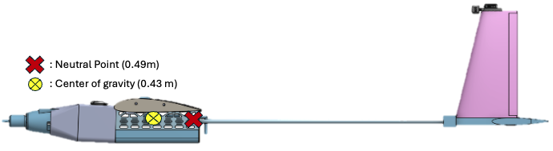
We targeted a static margin of approximately 15%, a deliberate balance between two competing risks. Too high and the aircraft becomes sluggish, requiring large control inputs to produce meaningful pitch response. For a technology demonstrator trying to characterize MTE high lift performance, an overly stable aircraft would dampen the pitch response needed to collect meaningful data on how MTE deflection affected aircraft behavior. Too low and the aircraft becomes twitchy, small disturbances from wind gusts or minor control inputs produce exaggerated pitch reactions, making trim difficult and creating a serious loss of control risk on a first flight with a hand built prototype.
In practice we landed at a static margin of ~18%. The CG settled at 0.43 m from the nose with a neutral point at ~0.49 m, giving approximately 6 cm of separation. The additional margin beyond our target was a conscious decision, accepting a slightly more stable, slightly more sluggish aircraft in exchange for greater confidence on a first flight. That judgment proved correct. Our test pilot, who also serves as head of the airfield we flew at, called it the best handling senior project airplane he had ever flown.
Fabrication
I fabricated the entire tail assembly by hand, from raw materials to a flight ready empennage. The process taught me as much about manufacturing constraints and real world problem solving as the design work itself.
The horizontal and vertical stabilizers were cut from pink insulation foam using the school's 4 axis CNC foam cutter. I sourced NACA 0012 coordinate files, converted them to G code, and ran them through the machine, which conveniently cut the spar channels into the foam in the same operation, keeping locations precise and eliminating a secondary machining step.
The structural core is a custom basswood empennage box I fabricated by drill pressing individual holes for each lifting surface spar, plus a through hole for the main carbon fiber spar. The lifting surface spars were designed to pass through and intersect the main spar rather than terminate at it, which significantly improved the load transfer, resistance to bending and torsional loads in flight.
Control surfaces were attached using thin plastic strips along the chord line acting as continuous living hinges connecting the elevator and rudder to their respective lifting surfaces. During final assembly I identified a gap in my design. I had not allocated a dedicated servo mounting location. I resolved this by adding a basswood block forward of the empennage box, providing a rigid attachment point with short, direct control linkages.
All spar interfaces were press fit and secured with structural adhesive at every junction and critical load path.
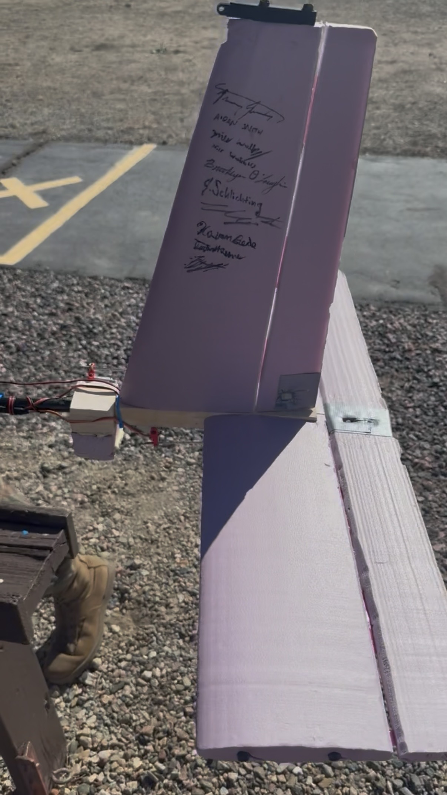
Final fabricated empennage
Successful first takeoff and landing. CU Flight Ops airworthiness check. Stable pattern, trim established.
Test pilot handoff. Demonstrated stable roll, pitch, and yaw authority. Added vertical stabilizer camera mount. Positive static and dynamic stability confirmed.
First MTE deflection at 20°. GPS telemetry collected. Torsional aeroelastic event experienced under high speed asymmetric MTE loading.
neutral → 30° MTE deflection
statistically significant across all deflection angles
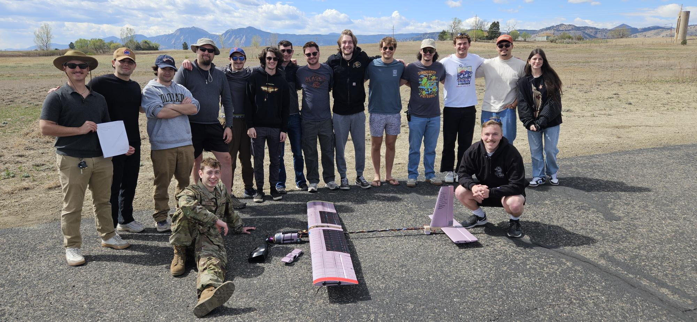
Prototype and IT Team
This lab put me through the full conceptual aircraft design cycle for the first time. My team and I conducted configuration selection, analytical modeling, sensitivity analysis, fabrication, and flight testing. The objective was to design and build a fixed wing glider capable of achieving a minimum glide range of 100 meters from a hand launch at 14.5 meters high, with natural longitudinal and lateral directional stability.
The most valuable outcome wasn't the glider itself but it was the first time I experienced the gap between what a model predicts and what physically happens.
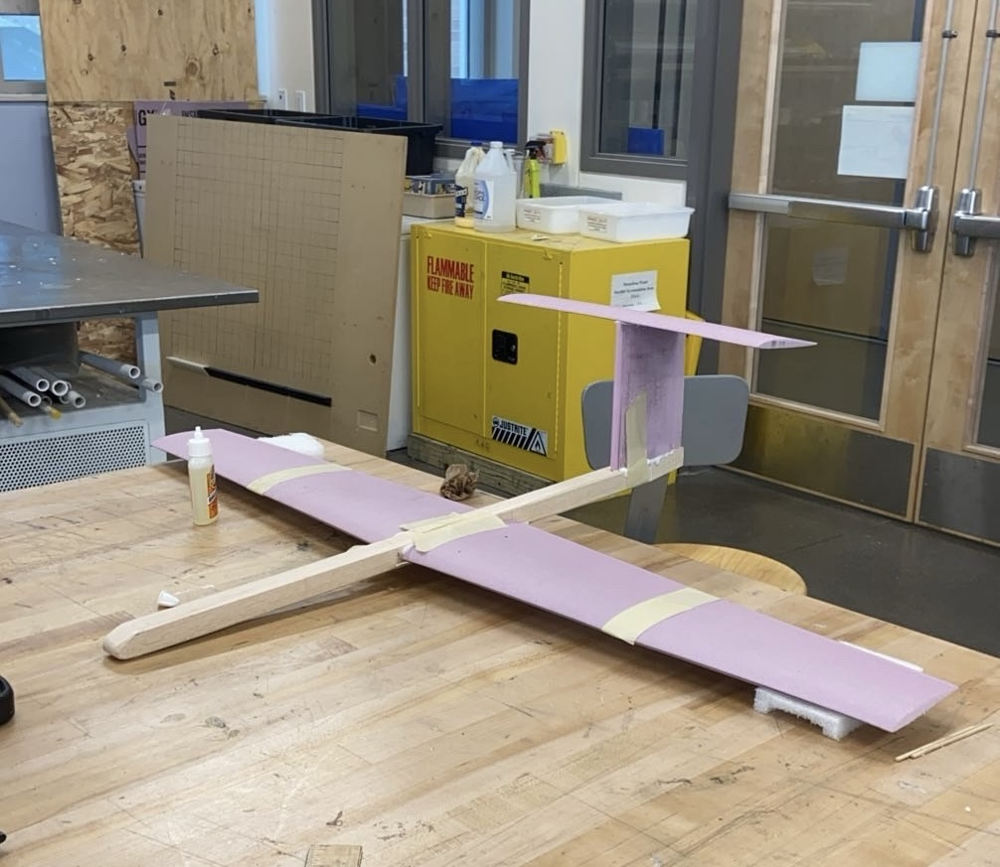
Fixed Wing Glider — Final Aircraft
Configuration Selection
We evaluated multiple configurations before committing to a final design, including a dual fuselage aircraft and a high performance sailplane layout. Both were appealing on paper. The dual fuselage offered a high aspect ratio and inherent lateral stability. The sailplane configuration promised low weight and an efficient high AR wing. Both were abandoned because fabrication complexity was too high for our 10 week build timeline, and CG management within the 1 meter wingspan constraint made accurate MATLAB modeling extremely difficult. We needed a configuration we could actually build, modify quickly, and model with confidence.
We settled on a conventional layout, a thin fuselage, maximized planform wing area, high wing, and T tail. The conventional configuration allowed for straightforward fabrication and easy modification, critical given how many sizing iterations the analysis would require. The high wing places the aerodynamic center above the center of gravity, creating a passive pendulum effect roll restoring force that promotes lateral stability without added geometry. The T tail keeps the horizontal stabilizer out of the disturbed wake behind the wing and fuselage, improving tail effectiveness and allowing stable pitch authority with a smaller, lighter surface. Both choices worked together to give us a naturally stable aircraft with no active control system.
Airfoil Selection
Airfoil selection was one of the most consequential design decisions. We needed an airfoil with a high maximum lift coefficient for a low stall speed, gentle and predictable stall behavior, and geometry suited to hotwire CNC foam fabrication. We researched airfoil families using wind tunnel test data matched to our expected Reynolds number range, cross referencing data from AirfoilTools and the UIUC Airfoils database.
We selected the EPPLER 393, a cambered low Reynolds number airfoil well documented for high lift performance in the flight regime our glider would operate in. We modeled the full 3D lift curve slope for our wing geometry in MATLAB, correcting from 2D airfoil data to 3D finite wing behavior, and validated it against our analytical predictions. For the tail surfaces we used a flat plate approximation, appropriate for the small, lightly loaded stabilizer surfaces operating at low angles of attack.
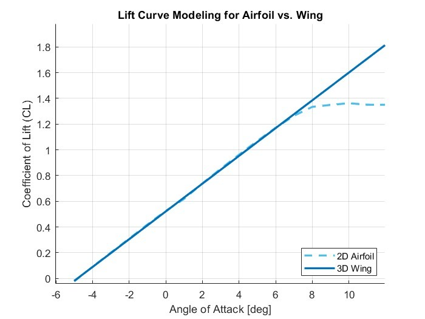
3D Lift Curve Slope — EPPLER 393 vs. Modeled Wing (MATLAB)
MATLAB Analysis & Sensitivity Study
All sizing decisions were driven by a sensitivity analysis in MATLAB. For each design parameter we made an initial estimate, then systematically doubled or halved it until we overshot the maximum glide range, then split the difference iteratively until we found the value that maximized performance. This process was repeated across every major parameter: wing dimensions, stabilizer sizing, fuselage geometry, and weight distribution.
Our key findings were that wing area had the largest single impact on range, so we maximized planform area up to the 1 meter wingspan constraint. Fuselage weight and frontal area had a significant negative impact, so we prioritized a lighter, smaller fuselage. Taper ratio, sweep angle, and stabilizer planform shape had minimal effect on projected range, so those were optimized for fabrication simplicity instead. CG positioning proved the most difficult parameter to optimize because it was coupled to almost every other decision simultaneously.
The drag polar was computed using component buildup methods for parasite drag (CD0 = 0.0396) and the Obert model for induced drag span efficiency. We used it to identify the L/D maximum point, the trim condition for maximum glide range and separately optimized for maximum endurance, which occurs at a different airspeed and lift coefficient. Longitudinal stability was confirmed by computing the neutral point at 0.12 m from the leading edge, with CG placed forward to achieve a static margin within the required 10–30% range.
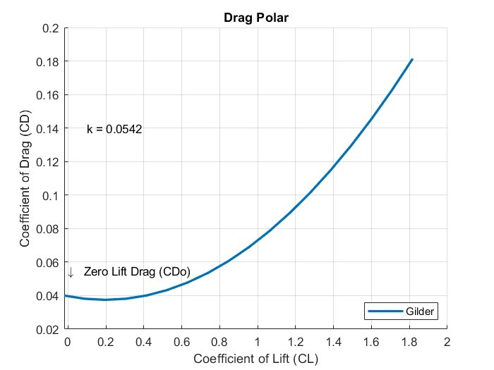
Drag Polar — CL vs. CD, Analytical Model (MATLAB)
Fabrication
Wing and tail surfaces were cut from foam using the school's hotwire CNC foam cutter. Airfoil coordinate files were sourced and converted to machine instructions, with spar channels cut into the foam during the same pass. One significant revision occurred during fabrication, the original horizontal stabilizer design had no variable incident angle. Wind tunnel testing showed the aircraft nose dived without correction, the tail was not producing enough lift to trim at the target angle of attack. We added adjustable elevators and through iterative test flights found that approximately 5° of incident angle achieved stable trimmed flight. This was a direct lesson in the gap between analytical prediction and physical reality.
Flight Test & What We Actually Learned
The glider was hand launched from the top of the CU Aerospace building at 14.5 meters. Multiple flights were conducted at different tail incident angles to experimentally map the drag polar, measuring glide range for each trim condition and computing CL and CD from flight data to compare against analytical predictions.
Our predicted maximum range was 140 meters. Our best actual flight was 51.6 meters. The glider stalled on nearly every flight. This told us that our trimmed angle of attack was too high and that the aircraft was flying too slowly and producing too much lift relative to what the wing could sustain in ground launched conditions. Launch angle and launch velocity, which our MATLAB model had not accounted for, had an outsized effect on whether the aircraft entered a stable glide or immediately stalled. Our analysis wasn't wrong, it was just incomplete. That distinction is something I carried directly into my senior design work.
The goal of this project was to experience the full product lifecycle. Identify a real user pain point, engineer a solution, and build a viable business around it. Working as a team of five, we were responsible for every phase from initial user research through hardware fabrication and commercial planning.
The result is the Step2It Cane, a smart walking cane with integrated step counting and an LCD display designed to make daily movement visible and self motivating, without adding complexity to the user's routine.
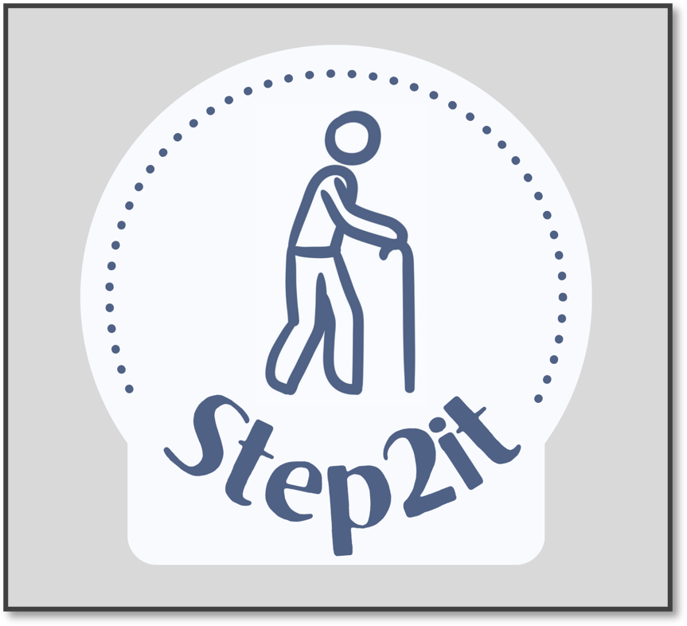
User Research → Design Requirements
The project started with a shared observation across our team, we all had elderly relatives who struggled to stay active and needed motivation to move. Before committing to a solution we had to validate that this was a real, widespread problem worth solving.
We conducted in person interviews with elderly individuals, caregivers, and physical therapists to hear the problem directly from the people living it. The results were clear, 68% of cane users are active fewer than 2 days per week, 75% of caregivers believe their loved ones would benefit from more activity, and 55% of that activity already comes from walking. Research from the National Institutes of Health reinforced the stakes stating that reduced physical activity is directly associated with increased risk of mortality in the aging population. The problem was real, and the opportunity was clear, to make walking count.
With a validated pain point and a clear picture of our customer, we defined our design requirements: accurate step count, lightweight construction, user friendly operation, durable build, aesthetic appearance, and easy battery replacement. The critical constraint that emerged from our interviews and that shaped every subsequent hardware decision was that any product requiring behavior change from the user would fail. The solution had to integrate seamlessly into a routine the user already had. We also benchmarked against existing competitors and conducted patent research across 10+ products to ensure our design was differentiated and clear of existing intellectual property.
Hardware Build
The cane is built from carefully selected materials chosen for both performance and manufacturability. It consisted of an aluminum shaft for structural rigidity, a TPU base for floor compliance, and an ASA printed electronics housing for impact resistance. I was personally responsible for designing and hand crafting the walnut wood handle, shaping it for grip, comfort, and the premium aesthetic our user research identified as essential for market acceptance. An Arduino microcontroller runs the step counting logic with all electronics integrated into the handle without altering its external profile.
Mass production was a consideration from day one. Every material and process was selected not just for performance but for repeatability at scale. Manufacturing a single cane involves machining the aluminum shaft, shaping the wood handle, 3D printing the electronics housing, soldering, and final assembly, approximately 1.5 hours of direct human involvement and 5 hours of total manufacturing time per unit. Keeping that process lean and well documented was as much a part of the engineering challenge as the hardware itself.
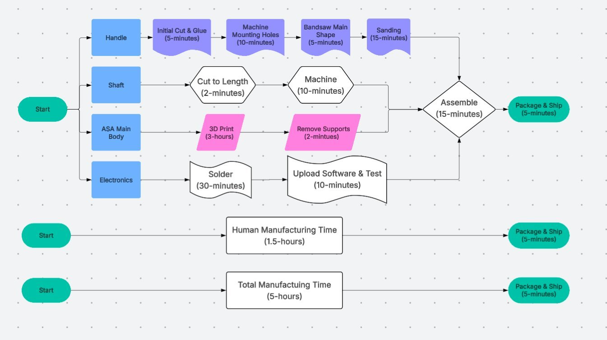
Manufacturing Process
Business Plan
A commercial case ran parallel to every engineering decision we made, materials, manufacturing complexity, and pricing all had to make sense as a business, not just as a product. I took ownership of the full business plan, building the financial model, market analysis, and revenue projections from the ground up.
Using a TAM/SAM/SOM framework we sized the opportunity, a $28 billion Total Addressable Market in global elderly and assistive devices, narrowing to a $532 million Serviceable Addressable Market in the U.S. cane market, and a Serviceable Obtainable Market of approximately $106 million based on the 20% of cane users willing to adopt a wearable health device.
We priced the Step2It Cane at $149.99, just under half the cost of our primary competitor and achieving a 61% gross margin with break even projected in year one. Our five year revenue projections demonstrated consistent profitability and improving margins as manufacturing volume scales, validating Step2It not just as a working product but as a viable, scalable business.
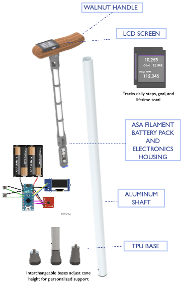
Step2It Cane — Final Product
As a team of five, we were challenged to identify a real problem, validate it through direct user research, and engineer a solution that worked. My team decided to work with a hospital, conducting in person interviews with a labor and delivery nurse, to understand a problem happening in one of the most high pressure clinical environments imaginable.
What we found was a genuine operational failure with serious consequences, and a clear opportunity to fix it.

The Problem → Design Requirements
During labor and delivery, nurses rely on four critical NICU sensors that must be attached to newborns immediately after birth. Each sensor costs $5,000 to replace. The existing storage solution was a simple plastic bag which was consistently failing under the pressure of delivery. Cords were tangled, sensors were misplaced, and nursing time that should have been spent on patients was being lost searching for equipment at the moment of highest clinical demand. The problem wasn't negligence. It was a system that was never designed for the environment it was being used in.
Our nurse interview made the requirements clear. The device needed to be portable enough to move between storage and patient rooms, organized enough that any nurse could locate any sensor instantly, and most critically easy enough to use that it required no learning curve whatsoever. If a nurse had to think about how to use it, they would default back to the bag. The solution had to be invisible in operation. Those constraints became our four design requirements: portable, organized, easy to use, and inexpensive enough to justify replacing a familiar system.
Mechanism Design & A Real Engineering Problem
Our solution was the Cord Keeper Pro, a wall mounted unit housing four independent cylinders, one per sensor. Each cylinder stores a sensor cord in a wound resting state. A nurse pulls the cord to retrieve the sensor, and when the plunger is released the cord automatically retracts and winds back into position. Zero steps, zero learning curve, zero behavior change required.
The retraction system was originally designed around a custom clock spring, a tightly coiled flat spring that stores potential energy as the cord is pulled and releases it to drive the cylinder back. We built our entire mechanism around this component. Then, days before our final presentation, the clock springs failed to arrive. With the design expo days away and a non functional prototype in hand, we had to solve the problem from scratch.
One of my teammates came up with a solution to wrap an elastic cord around bearings seated inside the cylinder. As the sensor cord is pulled, the elastic stretches, storing potential energy through tension. When the plunger is released, that stored energy drives the cylinder to rotate, winding the sensor cord back into its resting position. It was a fundamentally different mechanism from what we had designed for, that was improvised under real deadline pressure and it worked. We delivered a fully functional prototype at our expo on time. The elastic solution is not permanent (elastic cord degrades over time and would require replacement in a production version), but it validated the core concept completely and taught us more about real engineering constraints than any planned deliverable could have.
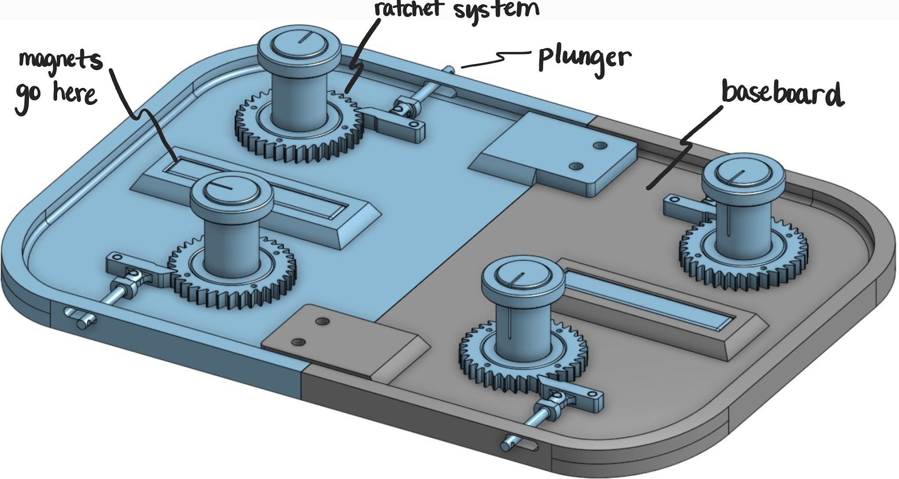
Testing & Validation
With a working prototype in hand, we performed structured validation testing. Structural analysis covered support reactions and ideal pull force angles to ensure the wall mount could handle repeated use loads. Material testing covered magnet pull strength and adhesion, velcro hold strength, and elastic cord elongation, durability, and strength under repeated cycling. We also tested the rubber components for flexibility and friction coefficient to ensure consistent cord grip.
The most meaningful test was the simplest, we handed the device to people who had never seen it and gave them no instructions. Every participant successfully operated it without being told how. Zero instructions needed. That was the one requirement we were least willing to compromise on, and we didn't.
This was my first engineering project at CU Boulder. My team of five was tasked with designing and building a tangible game that addressed a real sustainability problem. The problem we identified: portable electronic games consume enormous quantities of batteries, and only 4% of alkaline batteries are ever recycled, creating a significant and largely invisible stream of plastic and electronic waste. Our constraint was simple, eliminate the battery entirely.
The Problem & Design Requirements
We defined three categories of design requirements before touching any hardware. Functionally, the machine needed to light up when a player scored, keep an accurate count of that score, have sturdy mechanics including working paddles, and most critically produce its own energy from player interaction. Qualitatively it needed to be appealing to a wide age range, durable enough for transportation, and genuinely fun to play. We were also constrained to under $75 per person and a 10 week build timeline.
The sustainability requirement drove every engineering decision that followed. Any solution that still relied on wall power or replaceable batteries would have missed the point entirely. The energy had to come from the player.
Energy System & Electronics
The core of the machine is an inertial flywheel connected to a motor/generator. The player spins the flywheel at the base, converting physical input into rotational kinetic energy. That rotational energy drives the generator, which produces the electrical power that runs every system in the machine, the Arduino microcontroller, the IR scoring sensors, the LED lighting, and the point counter display. No batteries. No wall outlet. If the player stops spinning the flywheel, the lights go out.
Scoring was handled by IR emitter and receiver pairs positioned at each target zone on the board. When the ball breaks an IR beam, the Arduino registers a score event, increments the point counter, and triggers the corresponding LEDs. The entire system was designed to be modular, and the energy harvesting architecture was built to be transferable to any tangible game platform.
Construction & Materials
The machine was built primarily from recycled hardwood to minimize material waste, with PLA printed components for the flywheel mount and paddles. The portable form factor was intentional, keeping the footprint small reduces material use and makes the game playable in a wider range of locations, extending the useful life of the product. The entire build came in under the $75 per person budget constraint, with a functional, presentable result delivered within the 10 week timeline.
It was the first time I had to balance mechanical design, electronics integration, embedded programming, and sustainability constraints simultaneously, all within a fixed budget and deadline. The skills that project introduced, from Arduino programming to constraint driven design thinking, showed up in almost every project that followed.